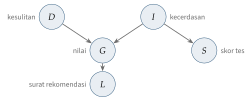

Bab 14
Bernalar dalam Ketidakpastian
Kuliah model probabilistik saya ikuti pada musim dingin 2025/26. Slidenya banyak bersandar pada buku Koller dan Friedman (2009) dan Russell dan Norvig (2021). Bab ini mengikuti urutan kuliahnya: representasi, inferensi, pembelajaran, lalu model yang berjalan dalam waktu.
Bab-bab sebelumnya kebanyakan membahas fungsi yang memetakan input ke output. Bab ini membahas cara lain memandang dunia: sebagai kumpulan variabel acak yang saling bergantung. Kita tidak lagi bertanya “apa jawabannya?”, tetapi “seberapa yakin kita pada setiap kemungkinan jawaban, dan bagaimana keyakinan itu berubah ketika ada bukti baru?”.
Mengapa butuh struktur
Distribusi gabungan atas \(n\) variabel biner butuh \(2^n-1\) angka. Untuk dua puluh variabel, itu sekitar sejuta angka, dan untuk tiga puluh variabel, satu miliar. Tidak ada yang bisa menyimpan, apalagi mempelajari, tabel sebesar itu. Jalan keluarnya adalah conditional independence. Variabel \(X\) dan \(Y\) independen bersyarat terhadap \(Z\) kalau, setelah \(Z\) diketahui, mengetahui \(Y\) tidak lagi menambah informasi tentang \(X\): \(p(X\mid Y,Z)=p(X\mid Z)\). Petir dan suara guntur sangat berkorelasi, tetapi keduanya disebabkan oleh peristiwa yang sama. Kalau kita sudah tahu ada sambaran listrik di awan, mendengar guntur tidak menambah informasi tentang kilatnya.
Aturan rantai probabilitas selalu berlaku: \(p(x_1,\dots,x_n)=\prod_ip(x_i\mid x_1,\dots,x_{i-1})\). Independensi bersyarat memangkas setiap faktor sehingga hanya bergantung pada beberapa variabel.
Bayesian network
Bayesian network adalah graf berarah tanpa siklus yang setiap simpulnya adalah variabel acak. Setiap variabel diberi distribusi bersyarat terhadap induk-induknya, dan distribusi gabungannya adalah hasil kali semuanya: \[p(x_1,\dots,x_n)=\prod_{i=1}^n p\big(x_i\mid\mathrm{pa}(x_i)\big).\] Kalau setiap variabel biner punya paling banyak \(k\) induk, jaringan butuh paling banyak \(n\,2^k\) angka. Dengan \(n=20\) dan \(k=3\), itu 160 angka, bukan sejuta.
Contoh yang dipakai banyak buku teks, termasuk Koller dan Friedman (2009), adalah seorang mahasiswa. Nilai ujiannya, \(G\), bergantung pada tingkat kesulitan mata kuliah, \(D\), dan kecerdasan mahasiswa, \(I\). Kecerdasan juga memengaruhi skor tes masuk, \(S\), dan nilai memengaruhi kualitas surat rekomendasi, \(L\). Graf ini memungkinkan beberapa pola penalaran. Penalaran kausal berjalan searah panah: mahasiswa cerdas cenderung mendapat nilai baik. Penalaran evidensial berjalan melawan panah: nilai buruk menurunkan keyakinan bahwa mahasiswanya cerdas. Pola yang paling menarik adalah penalaran antarsebab. Nilai buruk menaikkan keyakinan bahwa mata kuliahnya sulit dan menurunkan keyakinan bahwa mahasiswanya cerdas. Kalau kemudian kita tahu mata kuliahnya memang sulit, nilai buruk itu sudah “terjelaskan”, dan keyakinan tentang kecerdasan mahasiswa naik kembali. Pola ini disebut explaining away. Bayesian network menangani semua pola ini dengan satu algoritme inferensi yang sama, tanpa aturan khusus untuk masing-masing (Gambar 14.1).

Explaining away paling mudah dilihat dengan angka pada contoh yang lebih kecil. Rumput basah (\(W\)) bisa disebabkan hujan (\(R\)) atau penyiram (\(S\)), yang saling independen dengan \(p(R)=0{,}2\) dan \(p(S)=0{,}1\), dan rumput basah tepat ketika salah satunya terjadi. Peluang rumput basah adalah \(1-0{,}8\cdot0{,}9=0{,}28\). Begitu kita melihat rumput basah, peluang hujan naik dari \(0{,}2\) menjadi \(p(R\mid W)=0{,}2/0{,}28\approx0{,}71\). Lalu kita melihat penyiram sedang menyala. Penyiram sudah cukup menjelaskan rumput basah, sehingga rumput basah tidak lagi memberi informasi tentang hujan, dan \(p(R\mid W,S)\) kembali ke \(0{,}2\). Dua sebab yang semula independen menjadi saling bergantung begitu akibat bersamanya diamati.
Membaca independensi dari graf
Kapan dua variabel independen bersyarat bisa dibaca langsung dari bentuk graf. Ada tiga pola dasar untuk jalur \(X-Z-Y\). Pada rantai \(X\to Z\to Y\) dan pada garpu \(X\leftarrow Z\to Y\), jalur informasi terbuka selama \(Z\) tidak diamati dan tertutup ketika \(Z\) diamati. Pola ketiga, v-structure \(X\to Z\leftarrow Y\), bekerja terbalik. Kalau \(Z\) tidak diamati, jalurnya tertutup: kesulitan mata kuliah dan kecerdasan mahasiswa tidak saling memengaruhi. Kalau \(Z\), atau salah satu turunannya, diamati, jalur terbuka, dan itulah sebabnya explaining away terjadi. Dua variabel disebut d-separated oleh sekumpulan pengamatan kalau semua jalur di antara keduanya tertutup, dan dalam hal itu mereka pasti independen bersyarat.
Satu himpunan yang istimewa adalah Markov blanket sebuah variabel: induknya, anaknya, dan induk lain dari anak-anaknya. Kalau Markov blanket diketahui, variabel itu independen dari seluruh sisa jaringan. Sifat ini nanti menjadi kunci Gibbs sampling.
Inferensi eksak
Inferensi berarti menghitung distribusi sebuah variabel kueri setelah sebagian variabel lain diamati, misalnya \(p(I\mid G=\text{buruk})\). Cara naif adalah menjumlahkan distribusi gabungan atas semua variabel lain, dengan biaya eksponensial. Variable elimination memanfaatkan faktorisasi: penjumlahan didorong sedalam mungkin ke dalam hasil kali, sehingga setiap variabel dijumlahkan hanya dari faktor-faktor yang menyebutnya. Hasil antara disimpan sebagai faktor baru.
Urutan eliminasi menentukan biaya. Urutan yang baik menjaga faktor antara tetap kecil, sedangkan urutan yang buruk bisa membuat faktor sebesar tabel gabungan. Untuk graf berbentuk pohon, biayanya linear. Untuk graf umum, inferensi eksak termasuk masalah NP-hard, dan biayanya bergantung secara eksponensial pada ukuran faktor terbesar yang tidak bisa dihindari.
Contoh rantai tiga variabel biner membuat penghematannya terlihat. Misalkan \(A\to B\to C\) dengan \(p(A{=}1)=0{,}3\), \(p(B{=}1\mid A)\) bernilai \(0{,}2\) untuk \(A=0\) dan \(0{,}9\) untuk \(A=1\), serta \(p(C{=}1\mid B)\) bernilai \(0{,}1\) untuk \(B=0\) dan \(0{,}8\) untuk \(B=1\). Untuk menghitung \(p(C{=}1)=\sum_a\sum_bp(a)\,p(b\mid a)\,p(C{=}1\mid b)\), penjumlahan atas \(a\) didorong ke dalam karena hanya dua faktor pertama yang menyebut \(A\). Hasilnya faktor baru \(\tau(b)=\sum_ap(a)p(b\mid a)\), dengan \(\tau(1)=0{,}7\cdot0{,}2+0{,}3\cdot0{,}9=0{,}41\) dan \(\tau(0)=0{,}59\). Lalu \(p(C{=}1)=0{,}59\cdot0{,}1+0{,}41\cdot0{,}8=0{,}387\). Untuk rantai \(n\) variabel biner, menjumlahkan tabel gabungan membutuhkan \(2^{n-1}\) suku, sedangkan eliminasi hanya beberapa operasi per variabel. Dengan tiga puluh variabel, selisihnya antara setengah miliar suku dan seratusan operasi.
Kalau banyak kueri harus dijawab pada jaringan yang sama, eliminasi yang diulang untuk setiap kueri membuang kerja. Kuliah membahas clique tree: variabel-variabel dikelompokkan ke dalam klik yang disusun sebagai pohon, lalu pesan dikirim sekali ke arah akar dan sekali kembali ke daun. Setelah dua sapuan itu, setiap klik menyimpan distribusi marginal variabel-variabelnya, sehingga semua kueri tunggal bisa dijawab sekaligus. Inilah message passing dari Bab 13 dalam bentuk probabilistik. Pada graf yang punya siklus, pesan yang sama kadang tetap dikirim berulang-ulang sampai stabil, versi loopy yang tidak dijamin benar tetapi sering cukup baik dalam praktik.
Inferensi dengan sampel
Kalau inferensi eksak terlalu mahal, kita bisa memperkirakan peluang dengan menarik sampel. Cara paling sederhana adalah forward sampling: tarik setiap variabel mengikuti urutan graf, dari induk ke anak. Untuk menghitung peluang bersyarat, rejection sampling membuang sampel yang tidak cocok dengan pengamatan. Cara ini boros sekali kalau pengamatannya jarang terjadi, karena hampir semua sampel dibuang.
Likelihood weighting tidak membuang apa pun. Variabel yang diamati dipaksa bernilai sesuai pengamatan, dan setiap sampel diberi bobot sebesar peluang pengamatan itu terjadi. Itulah contoh importance sampling: sampel ditarik dari distribusi yang mudah, lalu dikoreksi dengan bobot. Kelemahannya muncul ketika pengamatan berada di bagian bawah graf. Variabel di atasnya ditarik tanpa memperhatikan pengamatan, sehingga banyak sampel mendapat bobot yang hampir nol.
Markov chain Monte Carlo mengambil jalan yang berbeda. Kita membangun sebuah rantai Markov yang distribusi stasionernya adalah distribusi posterior yang dicari, lalu menjalankan rantai itu cukup lama. Gibbs sampling memperbarui satu variabel pada satu waktu, menariknya dari distribusi bersyarat terhadap semua variabel lain. Berkat Markov blanket, distribusi bersyarat itu hanya melibatkan beberapa faktor lokal. Metropolis–Hastings (Metropolis dkk. 1953; Hastings 1970) lebih umum: usulkan langkah acak, lalu terima dengan peluang yang dipilih tepat agar rantai menyeimbangkan distribusi target. Kedua metode ini lahir dari fisika statistik, untuk menghitung sifat gas dan cairan, dan kembali ke fisika di Bab 28.
Bayangkan menaksir bentuk sebuah ruangan gelap dengan berjalan acak di dalamnya, sambil lebih sering melangkah ke tempat yang lebih “terang”. Setelah cukup lama, jejak langkah Anda menggambarkan seberapa terang setiap sudut ruangan. Langkah-langkah awal sebelum rantai mencapai keseimbangan biasanya dibuang, dan sampel yang berurutan saling berkorelasi, sehingga jumlah sampel efektifnya lebih kecil dari jumlah sampel mentah.
Belajar parameter dan struktur
Kalau struktur graf diketahui dan datanya lengkap, belajar parameter ternyata hanya menghitung. Maximum likelihood untuk \(p(x_i\mid\mathrm{pa}(x_i))\) adalah frekuensi relatif di data. Masalahnya muncul untuk kombinasi yang jarang atau tidak pernah terlihat, yang langsung mendapat peluang nol. Pendekatan Bayesian memberi prior Dirichlet pada setiap tabel peluang, dan efeknya setara dengan menambahkan hitungan semu sebelum melihat data. Kalau sebuah kejadian muncul 3 kali dari 10, maximum likelihood memberi \(0{,}3\). Dengan satu hitungan semu untuk setiap dari dua kemungkinan, yaitu Laplace smoothing, perkiraannya menjadi \(4/12\approx0{,}33\). Pengaruh hitungan semu ini memudar ketika data bertambah.
Kalau sebagian data hilang, atau ada variabel tersembunyi yang tidak pernah diamati, hitungan sederhana tidak bisa dilakukan. Algoritme EM (Dempster, Laird, dan Rubin 1977) bergantian antara dua langkah. Langkah E menghitung distribusi variabel yang hilang dengan parameter saat ini, sehingga menghasilkan hitungan yang diharapkan. Langkah M memperbarui parameter seolah-olah hitungan yang diharapkan itu adalah data lengkap. Setiap putaran tidak menurunkan likelihood. EM akan muncul lagi sebagai kerangka di balik VAE dan model campuran Gauss di Bab 15.
Belajar struktur graf lebih sulit, karena jumlah graf yang mungkin tumbuh super-eksponensial terhadap jumlah variabel. Kuliah membahas dua keluarga pendekatan. Pendekatan berbasis kendala menjalankan uji independensi bersyarat pada data, lalu membangun graf yang sesuai dengan hasil uji itu. Pendekatan berbasis skor mencari graf yang memaksimalkan sebuah skor, misalnya BIC, \[\mathrm{BIC}=\log p(\mathcal D\mid\hat\theta,\mathcal G)-\frac{\log N}{2}\,\dim(\mathcal G),\] yang menyeimbangkan kecocokan dengan data dan jumlah parameter. Tanpa suku penalti, graf yang terhubung penuh selalu menang, dan itulah overfitting dalam bentuk struktur. Pencariannya biasanya heuristik, misalnya hill climbing dengan menambah, menghapus, atau membalik satu sisi pada satu waktu, atau tabu search yang melarang kembali ke langkah yang baru saja diambil. Pendekatan ketiga, Bayesian model averaging, tidak memilih satu graf, tetapi merata-ratakan prediksi atas banyak graf yang diberi bobot posterior.
Model yang berjalan dalam waktu
Banyak sistem berubah dari waktu ke waktu. Dynamic Bayesian network memodelkannya dengan mengulang struktur yang sama di setiap langkah waktu, dengan dua asumsi: keadaan sekarang hanya bergantung pada keadaan sebelumnya (asumsi Markov), dan aturan transisinya tidak berubah dari waktu ke waktu. Seluruh model cukup ditentukan oleh satu irisan waktu beserta sambungannya ke irisan berikutnya, lalu bisa “dibuka” sepanjang yang dibutuhkan.
Ada empat tugas inferensi yang berulang di semua model temporal. Filtering menghitung keadaan sekarang dari semua pengamatan sampai sekarang. Prediction menghitung keadaan masa depan. Smoothing memperbaiki perkiraan keadaan masa lalu dengan pengamatan yang datang belakangan. Dan most likely explanation mencari urutan keadaan yang paling mungkin menjelaskan semua pengamatan.
Hidden Markov model
Hidden Markov model (Rabiner 1989) adalah DBN dengan satu variabel keadaan diskret yang tersembunyi dan satu pengamatan di setiap langkah. Ia ditentukan oleh matriks transisi \(a_{ij}=p(s_t=j\mid s_{t-1}=i)\), peluang emisi \(b_j(o)=p(o_t=o\mid s_t=j)\), dan distribusi awal. Filtering dihitung dengan forward algorithm, \[\alpha_t(j)=b_j(o_t)\sum_i\alpha_{t-1}(i)\,a_{ij},\] yang bergantian antara memprediksi (penjumlahan atas keadaan sebelumnya) dan memperbarui dengan pengamatan baru (perkalian dengan peluang emisi). Algoritme backward menghitung pesan yang sama dari arah sebaliknya, dan gabungan keduanya memberi smoothing. Algoritme Viterbi mengganti penjumlahan dengan maksimum, \(\delta_t(j)=b_j(o_t)\max_i\delta_{t-1}(i)\,a_{ij}\), sambil mencatat \(i\) mana yang memberi maksimum, lalu menelusuri catatan itu mundur dari akhir untuk mendapatkan urutan keadaan terbaik. Biayanya sebanding dengan panjang deret kali kuadrat jumlah keadaan, bukan eksponensial terhadap panjang deret seperti kalau semua urutan dicoba, dan Baum–Welch adalah EM untuk mempelajari parameter HMM dari pengamatan saja.
Contoh klasik dari Russell dan Norvig (2021) adalah penjaga yang tidak pernah keluar gedung dan hanya bisa menebak cuaca dari apakah direkturnya datang membawa payung. Misalkan peluang hujan hari ini sama dengan kemarin adalah \(0{,}7\), peluang membawa payung saat hujan \(0{,}9\), dan saat tidak hujan \(0{,}2\), dengan keyakinan awal \(0{,}5\). Pada hari pertama direktur membawa payung. Prediksinya tetap \(0{,}5\), dan pembaruan memberi hujan sebanding dengan \(0{,}9\times0{,}5=0{,}45\) dan tidak hujan sebanding dengan \(0{,}2\times0{,}5=0{,}10\). Setelah dinormalisasi, peluang hujan \(0{,}818\). Pada hari kedua prediksinya \(0{,}818\times0{,}7+0{,}182\times0{,}3\approx0{,}627\), dan pengamatan payung kedua menaikkannya menjadi sekitar \(0{,}883\). Setiap hari, keyakinan mengalir lewat dua langkah yang sama: ramalkan, lalu koreksi dengan bukti.
Kalman filter
Kalau keadaannya kontinu dan semua hubungan linear dengan noise Gauss, filtering bisa dikerjakan secara eksak dengan Kalman filter (Kalman 1960). Modelnya \(\boldsymbol{x}_t=\boldsymbol{A}\boldsymbol{x}_{t-1}+\boldsymbol w_t\) dan \(\boldsymbol z_t=\boldsymbol H\boldsymbol{x}_t+\boldsymbol v_t\), dengan noise proses \(\boldsymbol w_t\sim\mathcal{N}(\boldsymbol0,\boldsymbol Q)\) dan noise pengukuran \(\boldsymbol v_t\sim\mathcal{N}(\boldsymbol0,\boldsymbol R)\). Karena Gauss tetap Gauss di bawah transformasi linear, cukup melacak rata-rata dan kovarians: \[\begin{aligned} \hat{\boldsymbol{x}}^-_t&=\boldsymbol{A}\hat{\boldsymbol{x}}_{t-1}, & \boldsymbol P^-_t&=\boldsymbol{A}\boldsymbol P_{t-1}\boldsymbol{A}^\top+\boldsymbol Q,\\ \boldsymbol K_t&=\boldsymbol P^-_t\boldsymbol H^\top\big(\boldsymbol H\boldsymbol P^-_t\boldsymbol H^\top+\boldsymbol R\big)^{-1}, &&\\ \hat{\boldsymbol{x}}_t&=\hat{\boldsymbol{x}}^-_t+\boldsymbol K_t\big(\boldsymbol z_t-\boldsymbol H\hat{\boldsymbol{x}}^-_t\big), & \boldsymbol P_t&=(\boldsymbol I-\boldsymbol K_t\boldsymbol H)\boldsymbol P^-_t. \end{aligned}\] Baris pertama adalah prediksi, dan baris terakhir adalah koreksi. Matriks \(\boldsymbol K_t\), Kalman gain, menentukan seberapa besar kita mempercayai pengukuran dibanding prediksi.
Kalman filter seperti mendengarkan dua saksi. Saksi pertama adalah model, yang meramalkan posisi dari posisi sebelumnya. Saksi kedua adalah sensor. Keduanya bisa keliru, dan kita mempercayai masing-masing sesuai ketelitiannya. Dalam satu dimensi, kalau ketidakpastian prediksi punya varians 4 dan pengukuran punya varians 1, gain-nya \(4/(4+1)=0{,}8\): hasil akhir bergerak 80 persen ke arah pengukuran, dan variansnya turun menjadi \(0{,}8\), lebih kecil dari keduanya. Menggabungkan dua sumber yang tidak sempurna menghasilkan perkiraan yang lebih baik dari masing-masing.
Rumus satu dimensi ini bisa diturunkan langsung dengan teorema Bayes. Prediksi memberi prior \(\mathcal{N}(\hat x^-,P^-)\), dan pengukuran \(z\) memberi likelihood \(\mathcal{N}(z;x,R)\). Posterior sebanding dengan hasil kali keduanya, dan eksponennya adalah \(-\tfrac12\big[(x-\hat x^-)^2/P^-+(z-x)^2/R\big]\). Jumlah dua kuadrat dalam \(x\) tetap kuadrat dalam \(x\), jadi posteriornya Gauss. Mengumpulkan koefisien \(x^2\) memberi presisi posterior \(1/P=1/P^-+1/R\): presisi, yaitu kebalikan varians, langsung dijumlahkan. Mengumpulkan koefisien \(x\) memberi rata-rata posterior \(\hat x=P\big(\hat x^-/P^-+z/R\big)\), rata-rata berbobot dengan bobot sebanding presisi masing-masing. Dengan sedikit aljabar, keduanya bisa ditulis ulang sebagai \(\hat x=\hat x^-+K(z-\hat x^-)\) dan \(P=(1-K)P^-\) dengan \(K=P^-/(P^-+R)\), persis bentuk Kalman. Untuk angka di atas, \(1/P=1/4+1/1=1{,}25\), sehingga \(P=0{,}8\).
Untuk sistem yang tidak linear, Kalman filter diperluas dengan melinearkan model di sekitar perkiraan saat ini (extended Kalman filter), atau diganti dengan particle filter yang mewakili distribusi dengan sekumpulan sampel berbobot. Keduanya dipakai di kendaraan otonom untuk melacak posisi dari GPS, odometri, dan lidar.
Particle filter adalah filter Bayes yang sama dengan Kalman filter, hanya distribusinya diwakili sampel, bukan Gauss. Setiap langkah punya tiga bagian. Setiap partikel digerakkan menurut model dinamika, termasuk noise-nya. Setiap partikel diberi bobot sebanding dengan likelihood pengukuran di posisinya. Lalu partikel ditarik ulang sesuai bobotnya, sehingga partikel di tempat yang tidak mungkin mati dan partikel di tempat yang mungkin berlipat. Contoh kecil: tiga partikel di posisi 1, 2, dan 3 bergerak satu satuan ke 2, 3, dan 4. Sensor mengukur \(3{,}2\) dengan noise Gauss bersimpangan baku satu. Likelihood-nya sebanding dengan \(e^{-(x-3{,}2)^2/2}\), yaitu \(0{,}49\), \(0{,}98\), dan \(0{,}73\), dan setelah dinormalisasi menjadi bobot \(0{,}22\), \(0{,}45\), dan \(0{,}33\). Taksiran posisinya rata-rata berbobot, sekitar \(3{,}11\). Dalam praktik dipakai ratusan sampai ribuan partikel, dan karena tidak ada asumsi Gauss, distribusinya boleh bercabang, misalnya ketika robot belum tahu di lorong mana ia berada, persis lokalisasi Markov di Bab 21.
Di luar kelas
Model-model di bab ini bekerja di belakang banyak sistem yang kita temui di bagian-bagian berikutnya. Kendaraan otonom melacak posisinya dengan filter Bayes dan melacak mobil di sekitarnya dengan Kalman filter (Bab 21). Pelacak gerak inersia menggabungkan giroskop dan akselerometer dengan versi sederhana Kalman filter (Bab 20). Filter Wiener dan estimator MMSE dalam pemrosesan sinyal adalah saudara dekatnya (Bab 18). Dalam bioinformatika, hidden Markov model dipakai untuk mencari gen dan menjajarkan keluarga protein (Durbin dkk. 1998), dan algoritme EM menjadi dasar banyak metode analisis ekspresi gen (Bab 22).
Di dunia simulasi, ide Kalman filter dikenal sebagai data assimilation. Prakiraan cuaca modern bekerja dengan cara ini: model atmosfer meramalkan keadaan beberapa jam ke depan, lalu ramalan itu dikoreksi dengan pengamatan dari satelit, balon, dan stasiun cuaca, dengan bobot sesuai ketidakpastian masing-masing. Model atmosfer punya jutaan variabel, sehingga matriks kovarians \(\boldsymbol P\) tidak mungkin disimpan. Ensemble Kalman filter (Evensen 1994) memperkirakannya dari sekumpulan simulasi yang berjalan paralel dengan kondisi awal sedikit berbeda. Sebaran ensemble menjadi ukuran ketidakpastian ramalan.
Gagasan yang sama berguna di skala laboratorium. Simulasi CFD sebuah tangki dan pengukuran temperatur dari sensor di dalam tangki yang sama jarang cocok sempurna. Model turbulensi, sifat fluida, dan syarat batas semuanya menyimpan galat. Daripada memilih salah satu, kita bisa menarik simulasi secara perlahan ke arah pengukuran di titik-titik sensor, dengan kekuatan yang mencerminkan seberapa dipercaya masing-masing. Teknik paling sederhana seperti ini disebut nudging, dan ia adalah kerabat dekat Kalman filter dengan gain yang dipilih tangan.
Cara berpikir probabilistik juga membuka pintu ke masalah invers. Kalau kita ingin menyimpulkan parameter fisika, misalnya konduktivitas atau syarat batas, dari pengukuran yang berisik, jawaban yang jujur bukan satu angka, melainkan sebuah distribusi posterior. MCMC, inferensi variasional, dan model generatif dari Bab 15 adalah alat untuk menghitungnya.
Perkembangan riset
Banyak ilmu punya simulator yang teliti tetapi tidak punya likelihood yang bisa dituliskan: simulator tabrakan partikel, model epidemi berbasis agen, atau model iklim. Bayes membutuhkan \(p(\text{data}\mid\theta)\), sedangkan simulator hanya bisa menghasilkan data untuk \(\theta\) tertentu. Simulation-based inference (Cranmer, Brehmer, dan Louppe 2020) menjembatani keduanya. Jalankan simulator untuk banyak \(\theta\) yang ditarik dari prior, lalu latih jaringan saraf untuk mendekati posterior \(p(\theta\mid\text{data})\) secara langsung, misalnya dengan normalizing flow dari Bab 12. Setelah dilatih, posterior untuk pengamatan baru diperoleh hampir seketika, tanpa menjalankan MCMC lagi. Inferensi semacam ini disebut amortized: biaya besar dibayar sekali di awal, lalu dipakai berulang kali. Gagasan yang sama dipakai di asimilasi data dan dalam mengkalibrasi simulasi fisika terhadap percobaan.
Catatan sumber.
Bab ini mengikuti kuliah Probabilistic Models (Bayesian network, inferensi eksak dan aproksimasi, pembelajaran parameter dan struktur, DBN, HMM, Kalman filter) beserta latihannya. Slide kuliah bersandar pada Koller dan Friedman (2009) dan Russell dan Norvig (2021), yang juga menjadi bacaan pendamping terbaik. Bagian Kalman filter dan particle filter juga muncul di kuliah kendaraan otonom.